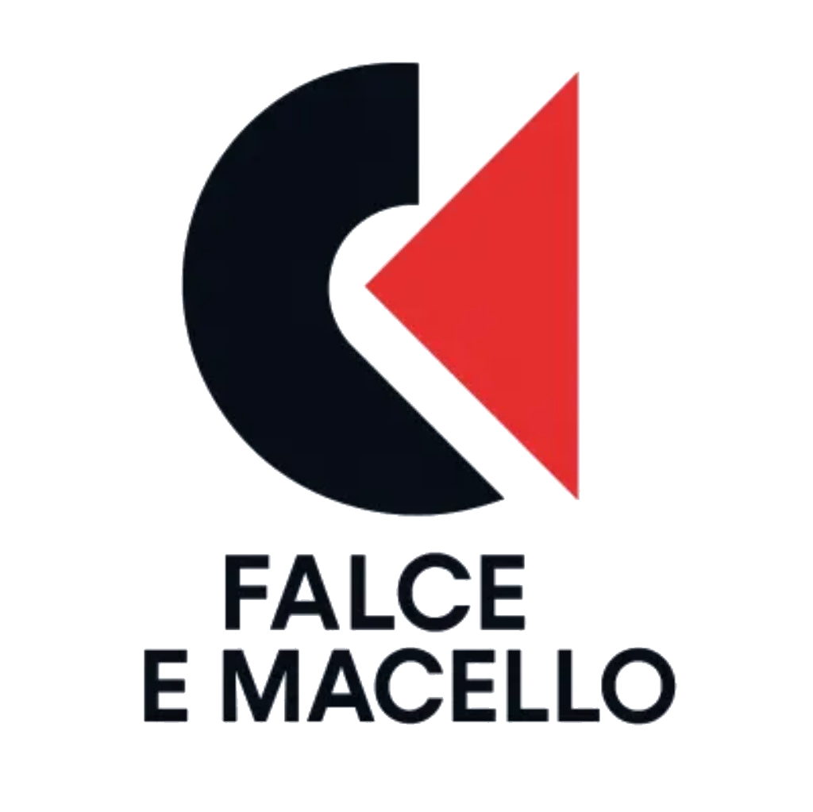
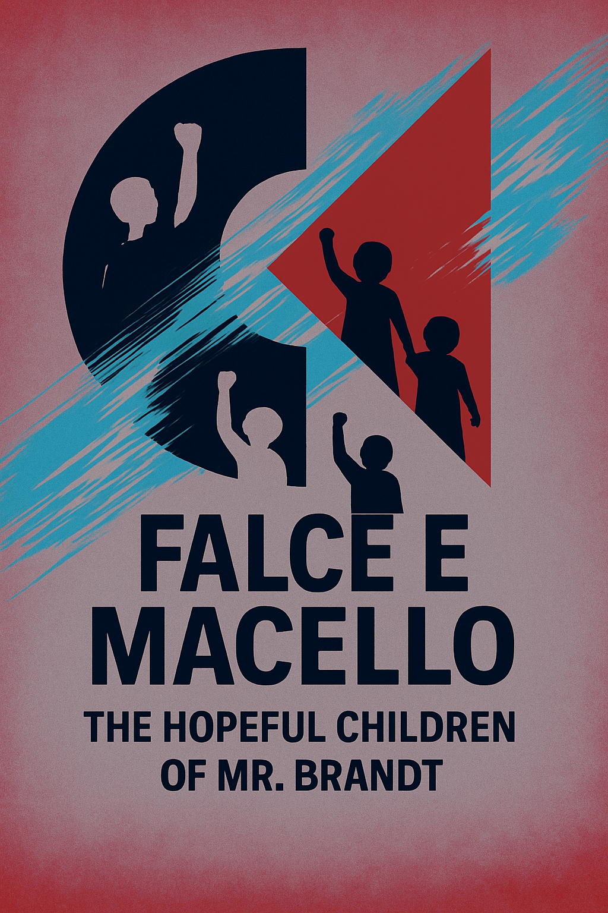

Musica AI • Ideologia Politica • Eredità del PCI
Un duo che si esprime attraverso l'Intelligenza Artificiale, riportando in vita le idee e le ideologie degli anni 80-90 con sonorità moderne, dure e politicamente consapevoli.

Falce e Macello è un duo di artisti e amici che si esprimono, o tornano ad esprimersi, tramite le musiche generate con AI. Il loro lavoro non è di fare semplici generazioni ma di lavorare con cura e struttura alle loro produzioni, con testi originali e di valore politico.
La loro estrazione è quella ereditata dal vecchio Partito Comunista Italiano e loro, nelle canzoni, vogliono sostenere l'intramontato valore politico, ideale ed ideologico di un certo tipo di sinistra italiana, quella concreta, aderente, con le radici ben piantate nel proprio passato e che esprime la propria eredità in una visione contemporanea.
Anche le canzoni sono il frutto di uno spirito aderente a questi principi, dagli anni 80 e 90 alle sonorità più dure e rabbiose moderne. Falce e Macello vogliono ribadire con forza il fatto che certe idee, un certo modo di pensare, non è e non può essere passato di moda, ma è stato semplicemente spazzato via dalla discussione civile per colpa di una propaganda attiva e scientifica in favore della cancellazione del dissenso e del senso critico reale, oramai estinto.
Testi profondi e melodie evocative generate con intelligenza artificiale, mantenendo l'anima della tradizione cantautorale italiana.
Rime taglienti e beat contemporanei che portano avanti il messaggio politico con la forza delle nuove sonorità urbane.
Contaminazioni tra ska, reggamuffin, punk e dubstep che creano un sound unico e riconoscibile.

Il nostro primo EP rappresenta un viaggio sonoro attraverso le contraddizioni del mondo contemporaneo, visto attraverso gli occhi di una generazione che non ha mai smesso di sperare nel cambiamento.
info@falcemacello.it